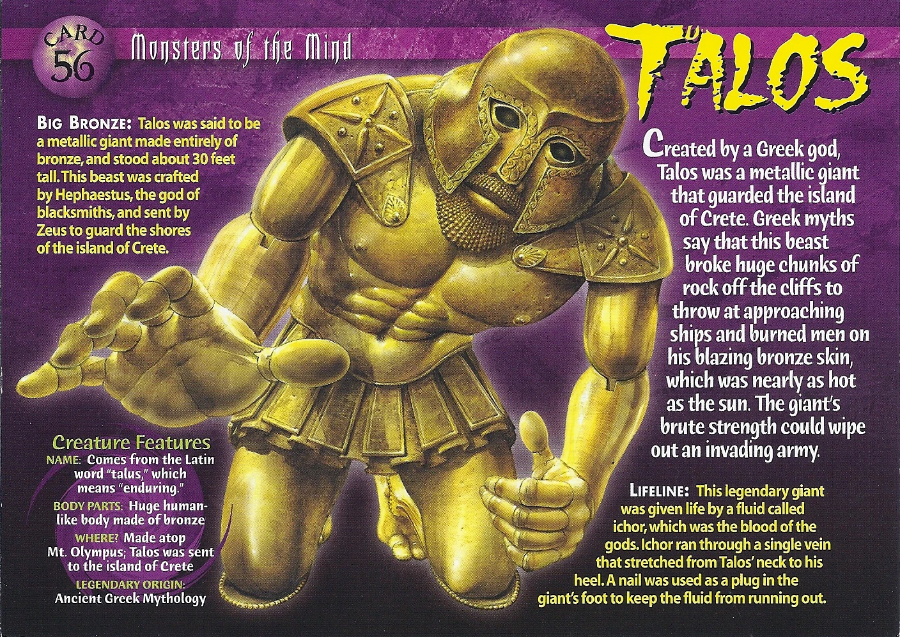

Robotics Engineering Degree Course Objectives
- Design and complete robotic and embedded systems solutions that address real-world situations and challenges.
- Demonstrate embedded microprocessor system and circuit skills.
- Develop mechanical control systems by implementing transducers, actuators, feedback, vision and sensing systems, and other mechanical
systems into robotic platforms.
- Examine and assess a variety of applications within the field of robotics.
- Model, analyze, and design systems or processes that integrate hardware and software to control autonomous mechanical systems.
- Implement artificial intelligence and data systems into robotic platforms.
My Favorite Robot in History!
